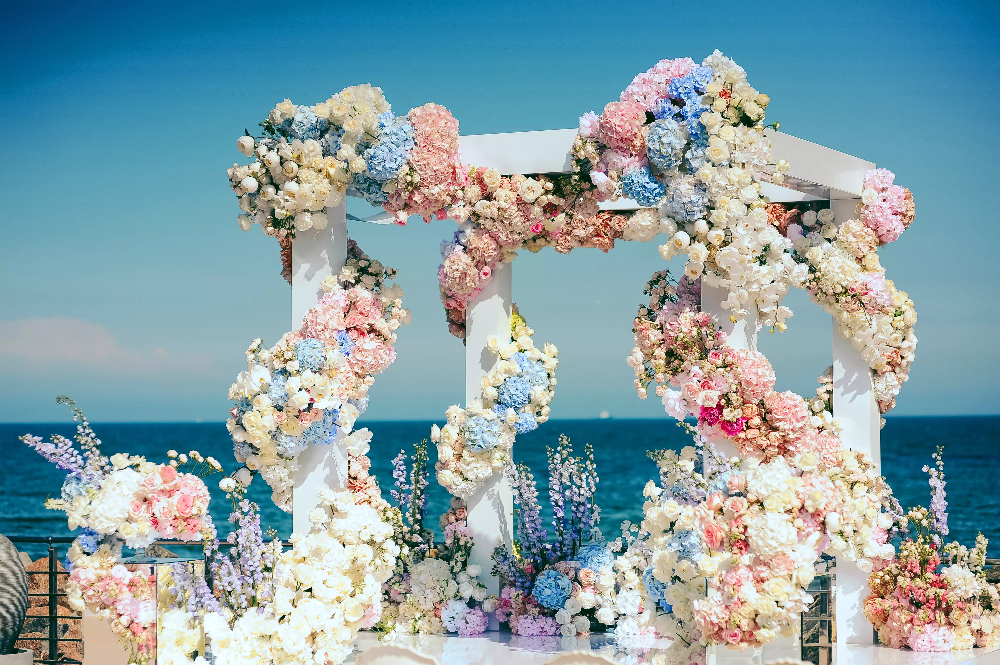
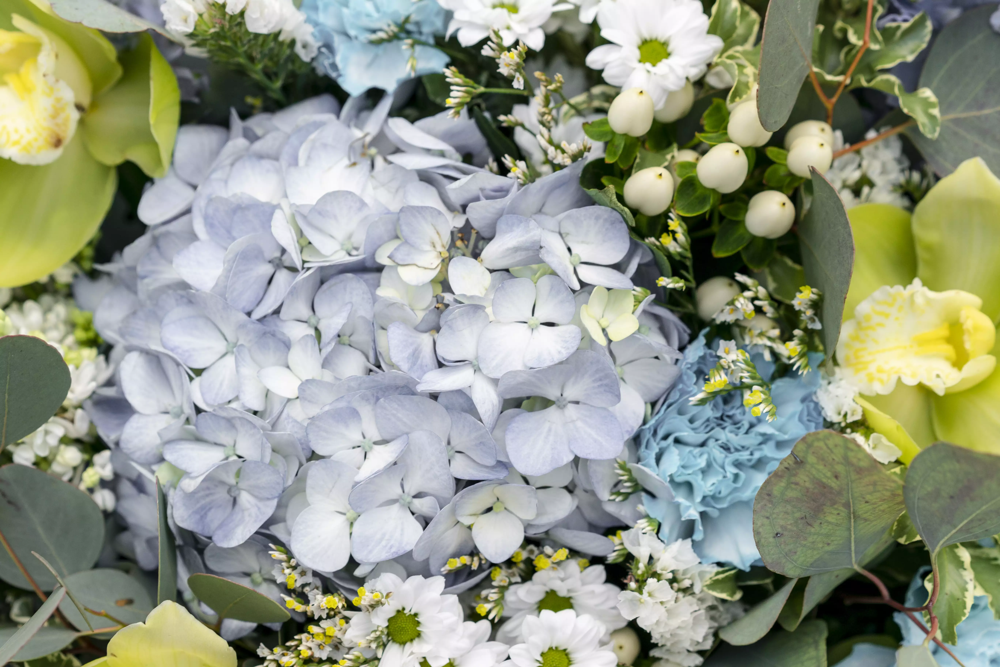
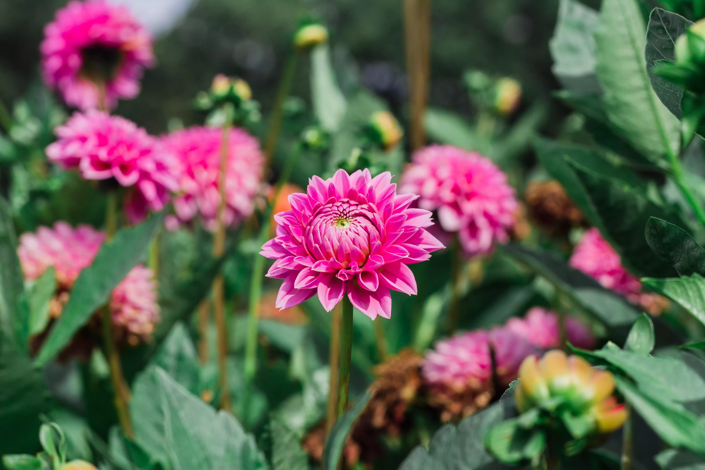

This seasonal sourcing guide helps event planners and wedding decorators align floral design proposals with actual farm availability, stem quality, and transit resilience. Instead of pitching generic mood boards, your team can pitch high-performance floral plans with lower wastage risk.
Use this quarter-wise framework to improve procurement decisions, protect premium budgets, and support stronger client confidence in your recommendations.
Quarterly Snapshot for Fast Planning
| Quarter | Primary Theme | Top Flower Groups | Procurement Focus |
|---|---|---|---|
| Q1 (Jan to Mar) | Grand weddings and romance peak | Roses, lilies, orchids | High stem grade and color consistency |
| Q2 (Apr to Jun) | Heat-resilient summer palette | Sunflowers, tropicals, jasmine, tuberose | Hardiness and transit durability |
| Q3 (Jul to Sep) | Monsoon textures and lush greenery | Lotus, hydrangea, lisianthus, greens | Humidity handling and pre-hydration |
| Q4 (Oct to Dec) | Festive gold and winter luxury | Chrysanthemum, marigold, lilies, dahlias | Uniformity for high-volume festive setups |
Q1: Grand Wedding and Romance Peak (Jan to Mar)

Q1 is one of the strongest wedding windows in India and includes high pressure demand around Valentine campaigns. Floral plans in this period should prioritize depth of inventory and reliable bloom quality.
Featured Varieties
- Roses: Top Secret (Red), Avalanche (White), Jumelia (Bicolor)
- Lilies: Asiatic (Yellow/Orange) and early Oriental (Stargazer)
- Orchids: Dendrobium (Purple/White)
Export-Grade Specs
- Roses: Grade A with 60 to 70 cm stems and 5 cm plus bud size
- Lilies: 3 to 5 buds per stem with 75 cm stem length
Best Use Cases This Quarter
Large wedding stages, mandap framing, romantic entrances, and premium hotel lobby programs where color consistency and fuller blooms are critical.
Q2: Heat-Resilient Summer Palette (Apr to Jun)
Summer projects require flowers that maintain structure during high temperatures and longer move times. Build your proposals around hardy blooms and tropicals that perform well under stress.
Featured Varieties
- Hardy Blooms: Sunflowers, gyp (Million Star), marigolds
- Tropicals: Anthuriums (Red/Pink), heliconias
- Fragrance Layer: Jasmine (Mogra), tuberose (Rajnigandha)
Export-Grade Specs
- Sunflowers: 10 to 12 cm head diameter with thick, non-drooping stems
- Anthuriums: Greenhouse sourced for wax-like finish and 15 plus day vase life
Best Use Cases This Quarter
Outdoor day weddings, destination events, poolside functions, and high-movement venues where flower durability and stem strength are essential.
Q3: Monsoon Bloom and Exotic Textures (Jul to Sep)

Monsoon season supports lush, humidity-friendly designs. It is a strong quarter for planners pitching immersive setups with greenery-heavy themes and textured installations.
Featured Varieties
- Exotics: Lotus (Pink/White), hydrangeas (Blue/Pink), eustoma (Lisianthus)
- Fillers and Greens: Eucalyptus, monstera leaves, ferns
- Carnations: Eskimo (White), Madame Colette (Pink)
Export-Grade Specs
- Hydrangeas: 15 cm plus head width with specialized pre-hydration treatment
- Carnations: 60 cm stems with firm, non-splitting calyx
Best Use Cases This Quarter
Monsoon weddings, indoor immersive concepts, temple-inspired setups, and greenery-heavy backdrops that need texture and hydration-friendly varieties.
Q4: Festive Gold and Winter Luxury (Oct to Dec)

Q4 combines festive demand and the start of winter wedding circuits. This quarter benefits from planning for high-volume consistency, especially for marigolds and chrysanthemums used in repeated structures.
Featured Varieties
- Festive: Chrysanthemums (Yellow/Gold), marigolds (Calcutta/African)
- Luxury: Peonies (Imported), Oriental lilies (White), dahlias
- Winter Classics: Gladiolus, snapdragons
Export-Grade Specs
- Chrysanthemums: Uniform head size, no petal drop, 50 cm plus stems
- Oriental Lilies: Grade A fragrance and 10 inch bloom diameter at opening
Best Use Cases This Quarter
Festive installations, Diwali decor programs, winter wedding entrances, and high-volume decor where repeatable flower size and color are required across multiple structures.
How to Use This Guide in Client Planning
Use this calendar during proposal stage to align design intent with season-ready varieties. This improves execution confidence and helps control replacement costs during setup.
- Finalize quarter-specific flower families before visual moodboards are locked.
- Prioritize export-grade specs for hero blooms used in focal structures.
- Plan backup varieties per quarter to avoid last-minute substitutions.
- Share quality benchmarks with venue teams handling receiving and prep.
Practical Pre-Event Procurement Checklist
- Lock estimated stem count 21 to 30 days before event date.
- Confirm grade, stem length, and bloom size for each key variety.
- Schedule delivery windows by setup sequence, not by floral category.
- Keep contingency stock for weather-sensitive and imported lines.
Need quarter-wise floral procurement support?
Fleur Vine helps planners and
decorators source event-ready flowers with export-grade consistency, predictable quality, and
cold-chain dispatch planning.